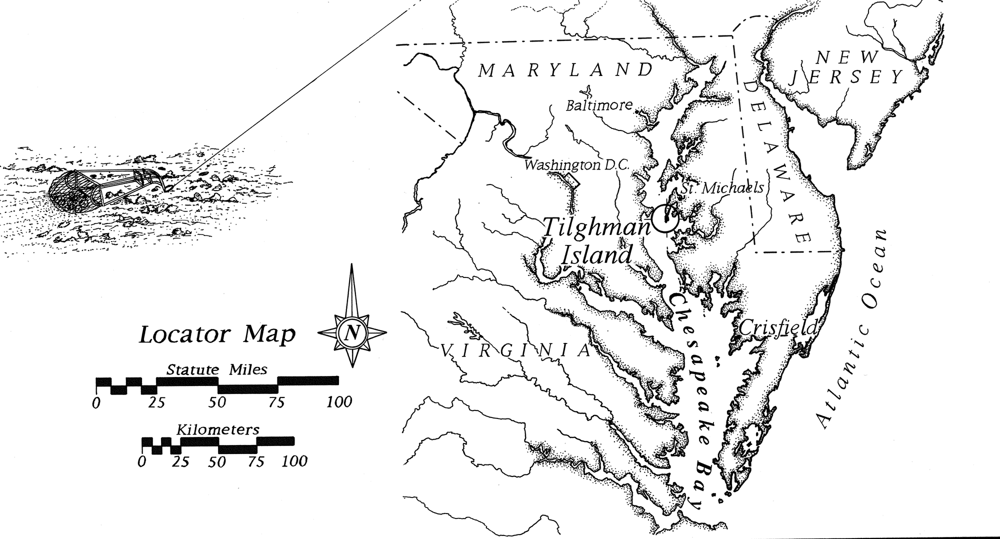

Package indexS01-V04 Location map
Original scan pixels: [4434, 6020, 10278, 9170]; source SHA-256: 2331daad060a890dcaf424a5c3148d069958564fa24096fce737f284e43e9b7f.
Native lossless view · Raw OCR ·
Word coordinates/confidence · Manifest

Checked construction records
Raw OCR — requires review
a “ws re
ame eee
MARYLAND
Baltimore ,..
Was, bin gton DC.. ae
eCrisfield
Locator Map
Statute Miles
G
N
\
&
Y
Kilometers
0 25 50 75 100
Original-resolution tiles and native bounds
- tile-00-00.png [4434, 6020, 6034, 7620]
- tile-00-01.png [5906, 6020, 7506, 7620]
- tile-00-02.png [7378, 6020, 8978, 7620]
- tile-00-03.png [8850, 6020, 10278, 7620]
- tile-01-00.png [4434, 7492, 6034, 9092]
- tile-01-01.png [5906, 7492, 7506, 9092]
- tile-01-02.png [7378, 7492, 8978, 9092]
- tile-01-03.png [8850, 7492, 10278, 9092]
- tile-02-00.png [4434, 8964, 6034, 9170]
- tile-02-01.png [5906, 8964, 7506, 9170]
- tile-02-02.png [7378, 8964, 8978, 9170]
- tile-02-03.png [8850, 8964, 10278, 9170]